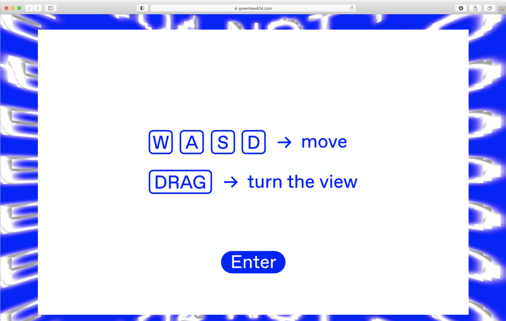
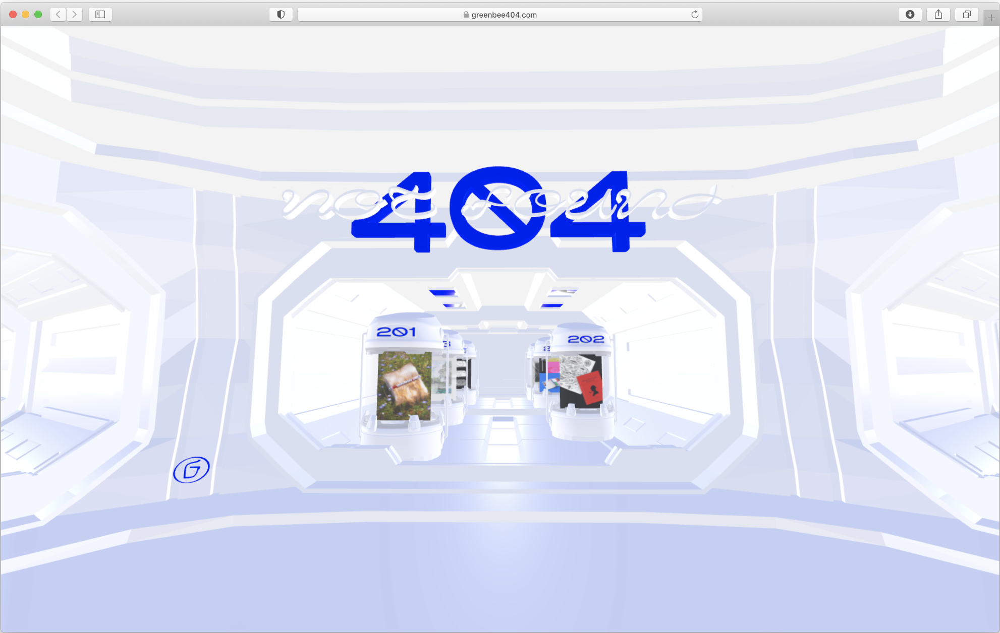
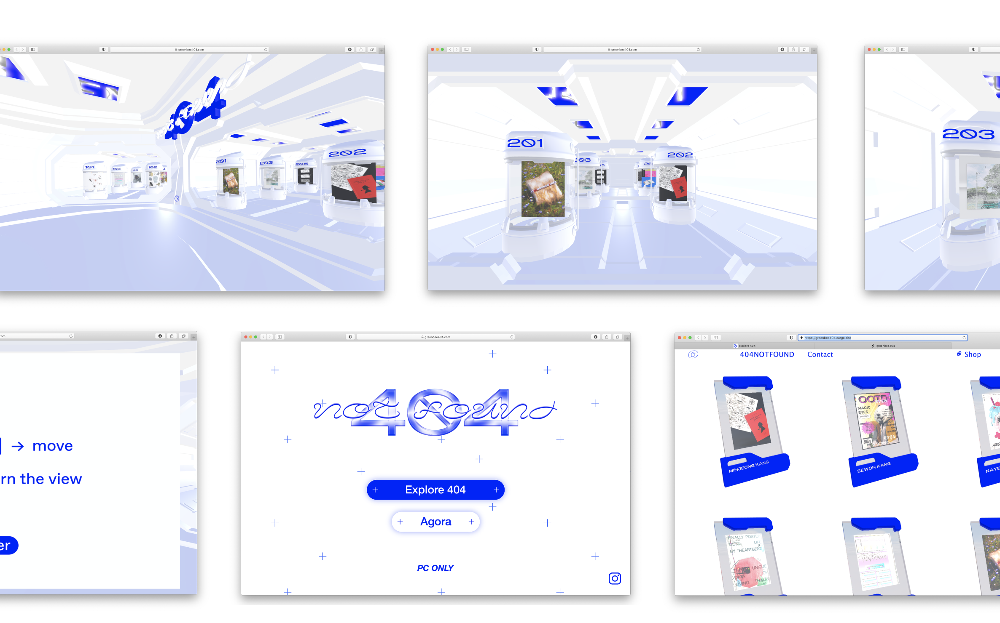
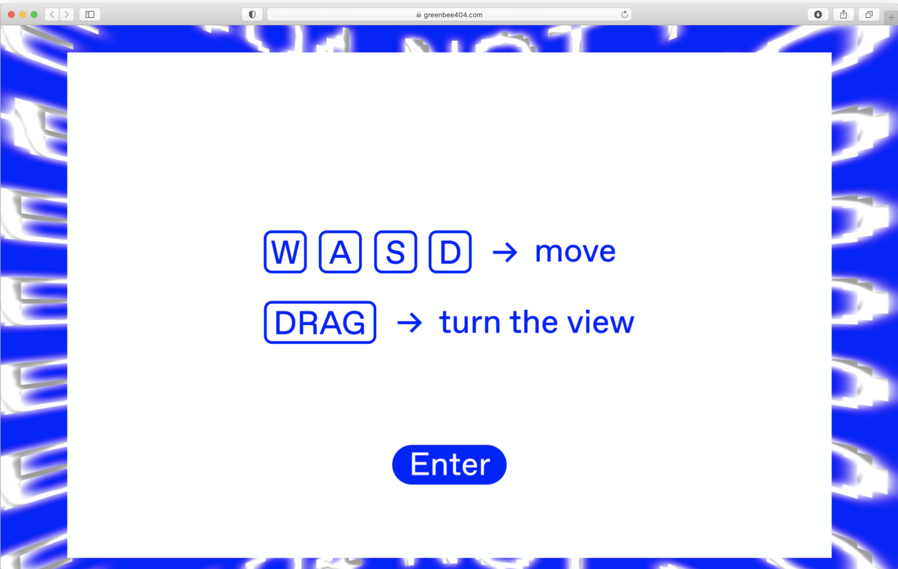
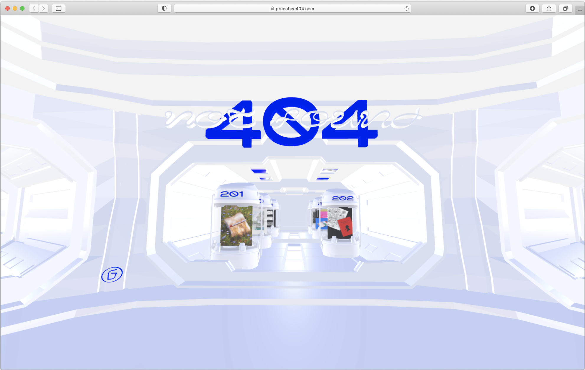
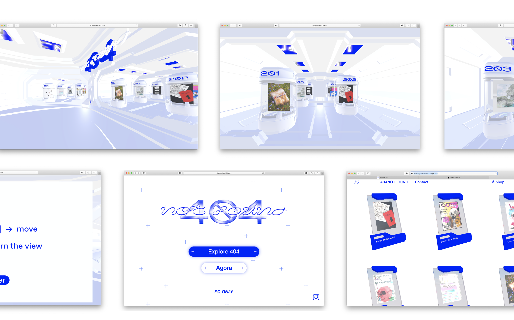

그린비 온라인 전시 '404 NOT FOUND'의 아트디렉터로 참여했습니다. 그린비는 각자의 익명의 정체성 Ze를 새로운 그래픽으로 정의합니다. 이제껏 정의되지 않은 새로운 그래픽의 등장으로 인해 웹에서의 오류 상황이 촉발됩니다. 감상자는 웹을 탐험하며 오류를 발견하는 능동적인 주체가 되어 전시에 참여합니다.
포스터 디자인 : 추아영 @chu_cu_chuu
AR 웹 디자인 : 박서영, 추아영 @chu_cu_chuu
Participated as an art director for Greenbee's online exhibition '404 NOT FOUND'. Greenby defines their anonymous identity Ze with a new graphic. Error conditions on the web are triggered by the appearance of new, hitherto undefined graphics. Appreciators participate in the exhibition as active subjects who explore the web and discover errors.
Poster Design : Ayoung Chu @chu_cu_chuu
AR Web Design & Develop : Seryoung Park, Ayoung Chu @chu_cu_chuu
 




